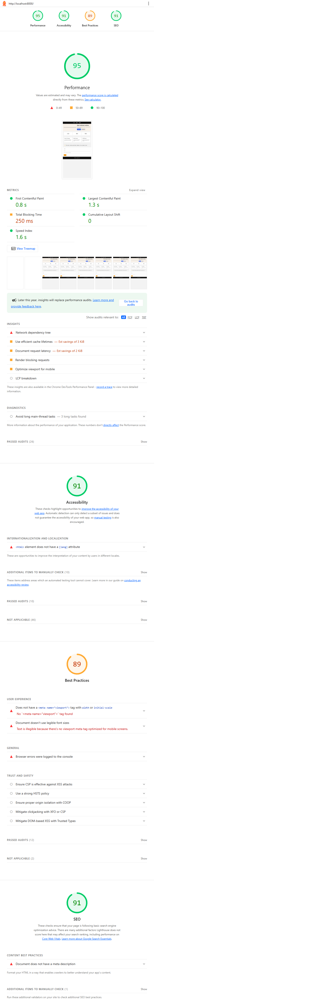
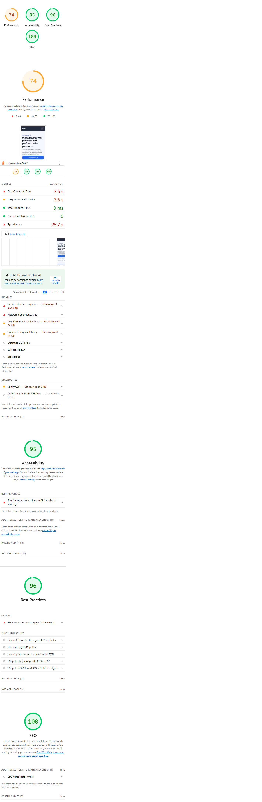

Demo / Presentation Report
Accessibility and Performance Audit - Before vs After Evidence Package
Prepared for Demo PresentationBefore/After Lighthouse Scores
| Category | Before | After | Delta |
|---|---|---|---|
| Performance | 95 | 74 | -21 |
| Accessibility | 91 | 95 | +4 |
| Best Practices | 89 | 96 | +7 |
| SEO | 91 | 100 | +9 |
Key Findings
- Accessibility, best-practices, and SEO improved in the redesigned version.
- Performance regressed due to heavier visual payload and asset-loading characteristics.
- Latest axe-core run reports 0 violations for WCAG 2A/2AA tags.
Issues Table (Severity / Impact / Fix)
| Severity | Issue | Impact | Fix / Recommendation |
|---|---|---|---|
| High | Performance drop after redesign | Slower page experience and lower Lighthouse performance score | Optimize/replace heavy imagery, reduce external dependencies, retest |
| Medium | Console network warning (missing optional asset) | QA signal noise and best-practice quality risk | Add favicon and verify static asset references |
| Medium | Ongoing accessibility risk in dynamic interactions | Potential regression during future UI iterations | Keep Lighthouse + axe + keyboard regression checks in release flow |
Lighthouse Screenshot Evidence

